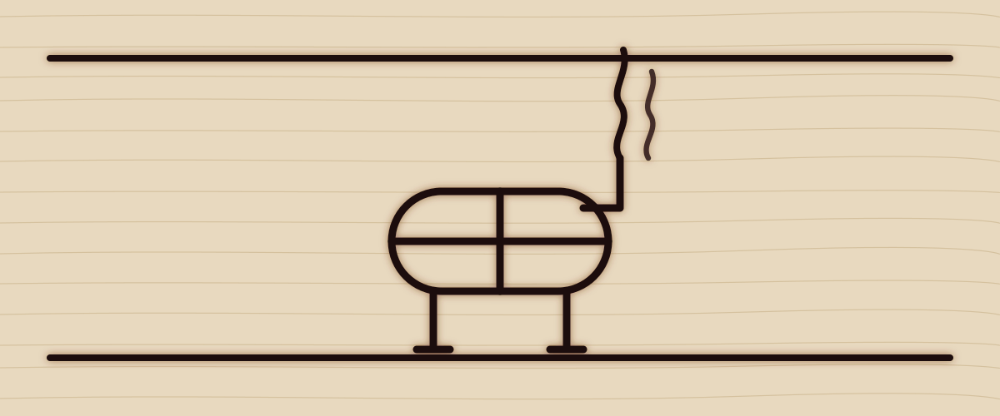

Component
Hero
The opening of a page: a heading at the largest size, a paragraph, one or two buttons, and beside them whatever the template leads with. Every template has its own hero form; this page shows Cattle's, then two variants that move.
Preview
The hero as the overview uses it. The heading takes --font-size-hero; the paragraph is muted and capped at a readable measure.
A retemplate template
Burnt in, not printed on.
Pale maple by day, oiled leather by night. The headings are branded into the board, the chrome around it is saddle leather with a running stitch, and the markup is the same as every other template here. Only the stylesheets and the art differ.
<section class="hero">
<div class="stack">
<p class="kicker">A retemplate template</p>
<div class="cattle-flare"><span class="cattle-mark" aria-hidden="true"></span></div>
<h1>Burnt in, not printed on.</h1>
<p>Pale maple by day, oiled leather by night. The headings are branded into the board, the chrome around it is saddle leather with a running stitch, and the markup is the same as every other template here. Only the stylesheets and the art differ.</p>
<div class="row">
<a class="btn btn-primary btn-lg" href="../index.html">Get started</a>
<a class="btn btn-lg" href="index.html">Browse components</a>
</div>
</div>
</section>Variants
Text only
The same hero with nothing beside the words. Add hero-text: the grid becomes one column and the stack is capped at a readable measure. Every template carries this variant with the same class.
Words only
A hero with nothing beside it.
One column, the text measure capped so the lines stay readable, and everything else the hero has: the kicker, the heading at the hero size, the paragraph, the buttons.
<section class="hero hero-text">
<div class="stack">
<p class="kicker">Words only</p>
<h1>A hero with nothing beside it.</h1>
<p>One column, the text measure capped so the lines stay readable, and everything else the hero has: the kicker, the heading at the hero size, the paragraph, the buttons.</p>
<div class="row">
<a class="btn btn-primary btn-lg" href="../index.html">Get started</a>
<a class="btn btn-lg" href="index.html">Browse components</a>
</div>
</div>
</section>Image only
A hero that is one picture, edge to edge, cropped to a wide band. Add hero-image and give it a single <img> (or a <figure>) with a real alt, since there is no heading to say what it is. Every template carries this variant with the same class.

<section class="hero hero-image">
<img src="../../assets/hero.svg" alt="The template's hero picture, filling the width" width="1200" height="500">
</section>The iron
The headline is pressed on cold and burns in: for two seconds the letters darken from a faint mark to char while the scorch blooms around them and settles, the rules above and below draw themselves outward from the middle, and a wisp of smoke rises from the lettering and thins out. Add cattle-iron to the hero. Under prefers-reduced-motion the global rule cuts every animation to nothing, so the hero is simply there.
A retemplate template
Pressed on. Burnt in.
The iron touches the board and the letters go from a pale mark to char over two seconds, the scorch swelling and settling. The rules burn out from the centre. The smoke keeps rising, thinly.
<section class="hero cattle-iron">
<div class="stack">
<p class="kicker">A retemplate template</p>
<div class="cattle-flare cattle-smoke" aria-hidden="true"><span></span><span></span><span></span></div>
<h1>Pressed on. Burnt in.</h1>
<p>The iron touches the board and the letters go from a pale mark to char over two seconds, the scorch swelling and settling. The rules burn out from the centre. The smoke keeps rising, thinly.</p>
<div class="row">
<a class="btn btn-primary btn-lg" href="../index.html">Get started</a>
<a class="btn btn-lg" href="index.html">Browse components</a>
</div>
</div>
</section>The lasso
A rope draws itself around the hero, starting at the top left and running the whole way round in three seconds, with the twist of the rope showing in its two-tone dash. When it closes it stays, a rope border on the board. Add cattle-lasso to the hero; the global prefers-reduced-motion rule stops it.
A retemplate template
Roped off.
Two strokes on one rectangle: a dark rope underneath, a light twist on top, both drawn from the same corner by the same offset. The rope tokens change with the scheme.
<section class="hero cattle-lasso">
<svg class="cattle-lasso-rope" aria-hidden="true"><rect class="cattle-lasso-under" pathLength="100"/><rect class="cattle-lasso-over" pathLength="100"/></svg>
<div class="stack">
<p class="kicker">A retemplate template</p>
<h1>Roped off.</h1>
<p>Two strokes on one rectangle: a dark rope underneath, a light twist on top, both drawn from the same corner by the same offset. The rope tokens change with the scheme.</p>
<div class="row">
<a class="btn btn-primary btn-lg" href="../index.html">Get started</a>
<a class="btn btn-lg" href="index.html">Browse components</a>
</div>
</div>
</section>Classes
The rules live in css/global.css: the hero under /* == utilities == */ with the other layout helpers, the variant under /* == hero variants == */.
| Class | Purpose |
|---|---|
.hero | The opening section: a grid of a text stack and, in most templates, a picture or a piece of flare |
.hero .stack | The kicker, heading, paragraph and button row |
.hero .row | The buttons |
.hero.cattle-iron | The burn-in on the heading and the rules drawing out |
.cattle-smoke | The zero-height layer above the heading that holds the smoke |
.cattle-smoke span | A wisp; three on staggered delays |
.hero.cattle-lasso | The hero with a rope drawing itself around it |
.cattle-lasso-rope | The inline SVG; two rects, the rope and its twist |
.hero.hero-text | Words only: one column, capped measure (every template) |
.hero.hero-image | Picture only: one image edge to edge, cropped 21:9 (every template) |
Notes
- One
<h1>per page: the hero's heading is it. The kicker above it is a<p>, not a heading. - Above
48remthe hero is two columns, text then picture; below, it stacks. The variant keeps whatever layout its markup implies. - The variant is CSS only. Its animation is declared with
bothfill, so the page is correct before it starts and after it ends, and the globalprefers-reduced-motionrule stops it. - Another template ignores
cattle-ironand shows its own hero; any flare markup inside sits in the template's flare wrapper so a swap can drop it.